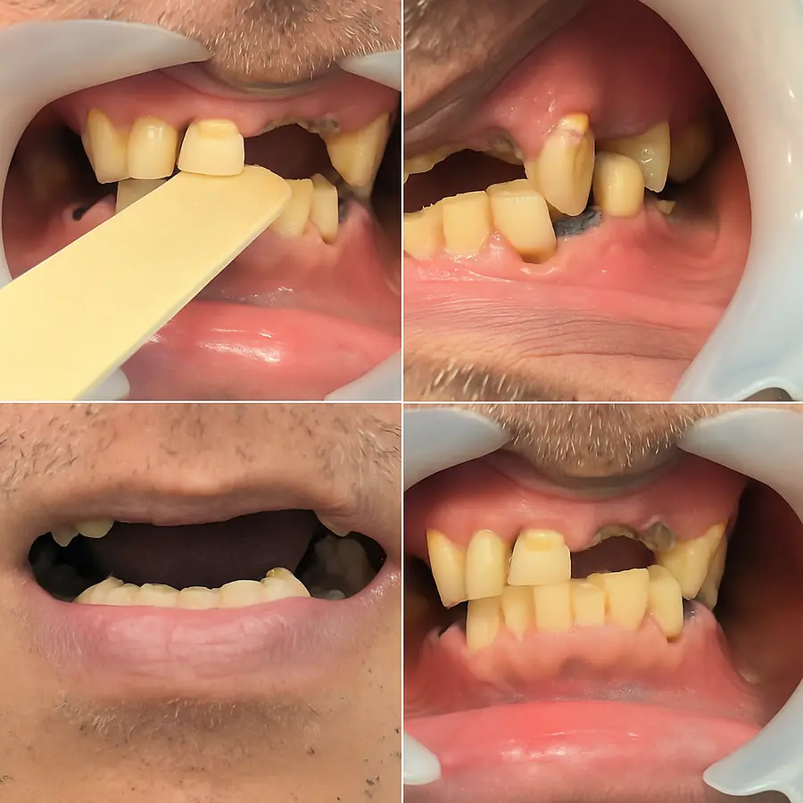

نسخه استخراجشده؛ ترجمه یا تأیید علمی انجام نشده است. وضعیت: captured
در این بیمار کل استاپ خلفی سیستم از دست رفته است و فضای ریستوریتیو محدود شده. پیش از هر تراش یا ساختی، فضا را از کجا باید تهیه کرد؟

مشکل فضا معلول این زنجیره است، نه نقطهی شروع آن. «تهیهی فضا» اینجا یک روند چندمرحلهای و تحلیلی است، نه یک مداخلهی لحظهای.
در این مرحله قدامیها را واقعاً بلند نمیکنی؛ فقط تصور میکنی اگر قدامیها طول واقعی و اولیهی خود را داشتند و رابطهی عمودی فک در مقدار اصلی بود، چه اتفاقی برای سیستم میافتاد. بررسی میزان سایش قدامیها برای تخمین اندازهی اصلی بسیار کمککننده است: اگر این دندانها ساییده نبودند، فک چقدر باز میشد؟
وقتی فهمیدی «در حالت طبیعی» فضا باید چگونه باشد، میپرسی: آیا با بازگشت به حالت طبیعی، فضای کافی ایجاد میشود؟
این اقدامات زمانی لازماند که فضای طبیعی کافی نباشد و لازم باشد فضا بیشتر از مقدار تخمینی واقعی سابق باز شود. یعنی اصلاح جمعی نتیجهی یک کمبود اثباتشده است، نه انتخاب پیشفرض.
با همان مقدار VDO از دسترفته، وقتی فرض شد سیستم به مقدار طبیعی برگردد، فضای ریستوریتیو بهاندازهی کافی باز میشد؛ پس نه افزایش بیشتر VDO لازم بود و نه جراحی افزایش طول. از این نقطه، درمان از حالت «جمعی» خارج میشود و فردبهفرد ادامه پیدا میکند.
این روش، دندان مقصر در بههمریختگی پلان و میزان تقصیر هر دندان در محدود کردن فضای ریستوریتیو را نشان میدهد. سپس برای هر دندان تصمیم میگیری: اصلاح ارتفاع (Recontouring)، اصلاح ساختار، یا حذف/کشیدن، اگر با هیچ اصلاحی داخل پلان قابلقبول قرار نمیگیرد.
در این فاز، درمان از یک کار «جمعی» به Case-by-Case → Tooth-by-Tooth تبدیل میشود.
نوع سؤال: ساخت کلمه · 4 خانه
حروف منبع: ذ · ه · ی · ن